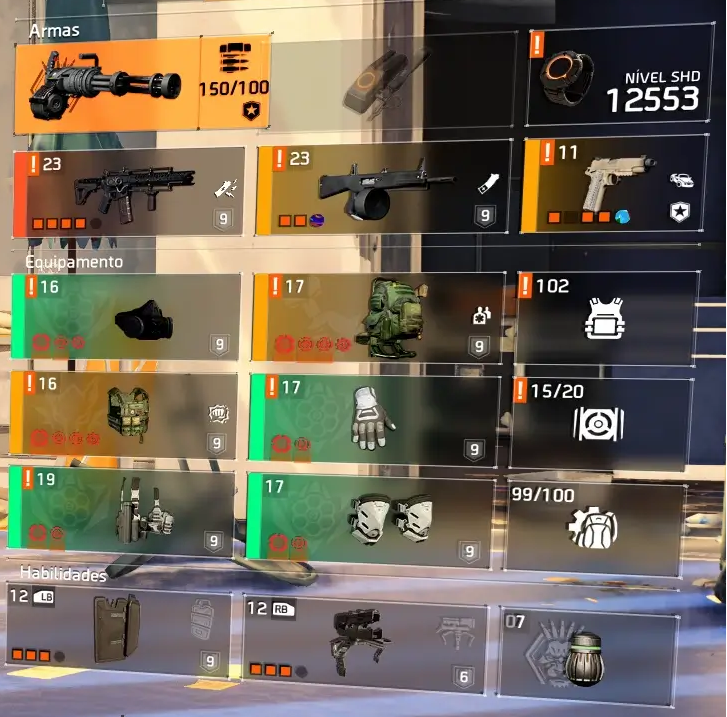
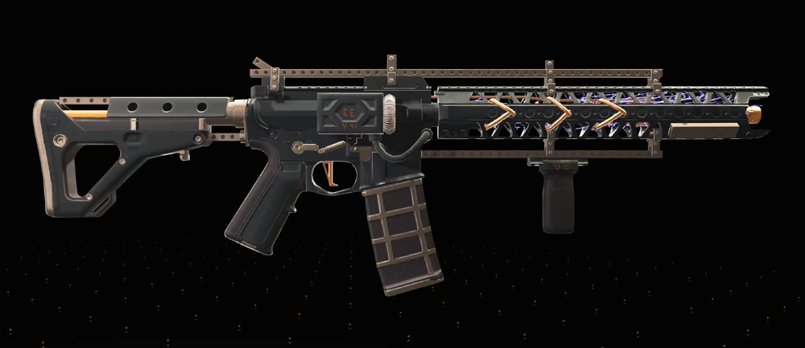
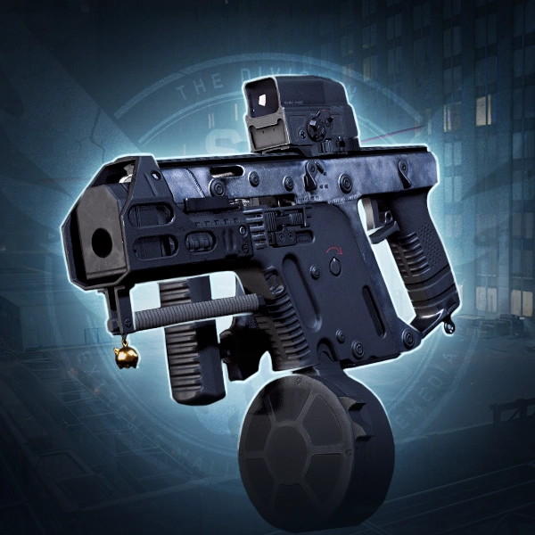
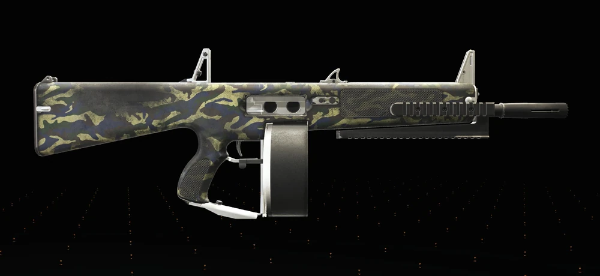

DPS automático
Build feita para manter pressão constante e transformar cadência de tiro em dano acumulado.
A Striker DPS é uma das builds mais fortes e mais populares do jogo para quem quer dano alto, ritmo agressivo e ótima performance em quase todo o conteúdo PvE. O foco aqui é manter pressão constante no alvo, empilhar bônus com consistência e transformar boa mira em dano real.
Build feita para manter pressão constante e transformar cadência de tiro em dano acumulado.
Brilha quando você consegue manter o alvo na mira e sustentar a rotação ofensiva com estabilidade.
Se avançar demais, perder cobertura ou quebrar a consistência, a build cai rápido em conteúdo pesado.
Brilha quando o time controla o campo e permite que você foque totalmente em dano.
A base mais forte da Striker DPS gira em torno de 4 peças do set Agressor, combinadas com peças high-end que aumentam a liberdade de talento e ajudam a fechar uma build ofensiva consistente.
Veja como a build fica na prática: equipamentos, atributos e comportamento em combate real.

Aqui você vê a build equipada no jogo, com a distribuição das peças e a composição ofensiva pronta para uso real.

A base da build é fechar uma boa chance crítica e depois empilhar dano crítico, sem abrir mão do conforto da arma.
Veja como a Striker se comporta em combate real, com foco em ritmo, pressão e manutenção do dano.
A Striker escala muito bem com armas estáveis, de boa cadência e que permitam manter o alvo na mira por bastante tempo.

AR
SMG
BACKUPA lógica da build é simples: primeiro você garante uma base sólida de chance crítica, depois empilha dano crítico e mantém o máximo possível de tempo em alvo. Não adianta ter números altos no papel se a arma estiver desconfortável para controlar.
A Striker não é só vestir as peças. O resultado vem muito de mira, escolha de alvo e disciplina de posicionamento.
Priorize inimigos que fiquem expostos por mais tempo. Isso ajuda a manter ritmo e evita perder dano em trocas ruins.
A build é ofensiva, mas não é de correr sem pensar. Use pressão com disciplina e avance só quando o campo estiver controlado.
É melhor manter dano contínuo e seguro do que forçar jogadas e morrer cedo em lendária, raid ou incursão.
Respostas rápidas para as dúvidas mais comuns sobre a Striker DPS.
Sim, principalmente em grupos organizados e com bom controle de campo.
Não obrigatoriamente, mas ela é uma das armas mais confortáveis e fortes para essa proposta.
Funciona nos dois, mas normalmente rende ainda mais em grupo, quando você pode focar em dano.
Sim. É uma das melhores portas de entrada para quem quer entender DPS de verdade no jogo.
A próxima evolução natural é testar outras variações conforme suas peças melhoram. Vale a pena adaptar a build ao seu estilo e à atividade do momento.